vignettes/CytoExploreR-Manual-Gating.Rmd
CytoExploreR-Manual-Gating.Rmdcyto_gate_draw.
cyto_gate_draw gate types, users will need to download and setup the Activation dataset shipped with CytoExploreRData. This vignette is for demonstration purposes only, we will not be gating the GatingSet directly as we will be gating random populations.
# Load required packages
library(CytoExploreR)
# Setup Activation samples
gs <- cyto_setup("Activation-Samples",
gatingTemplate = "Manual-Gating.csv")
# Apply compensation
gs <- cyto_compensate(gs)
# Transform fluorescent channels
trans <- cyto_transformer_logicle(gs)
gs <- cyto_transform(gs,
trans = trans)
# Extract root cytoset
cs <- cyto_extract(gs, "root")
cyto_gate_draw(cs,
alias = "Cells",
channels = c("FSC-A","SSC-A"),
type = "boundary")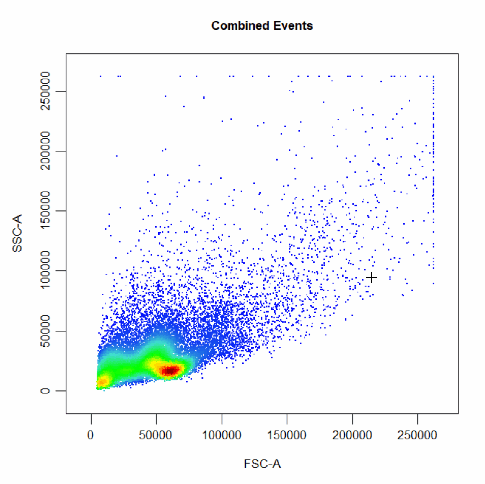
cyto_gate_draw(cs,
alias = "Cells",
channels = "FSC-A",
type = "boundary")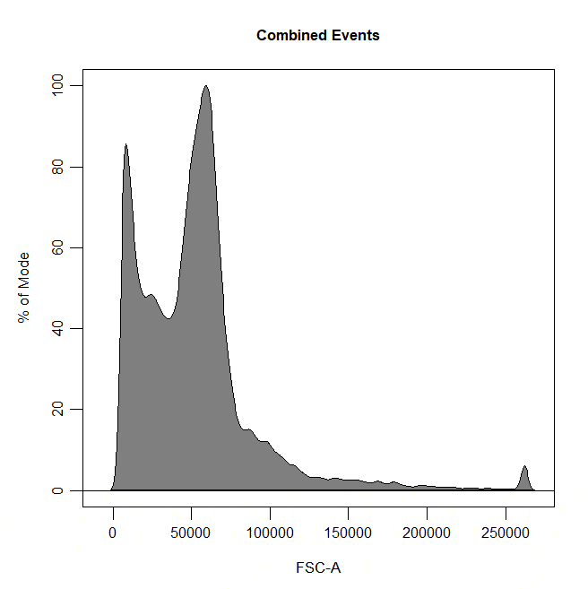
# Rectangle gate
cyto_gate_draw(cs,
alias = "CD4 T Cells",
channels = c("CD4", "CD8"),
type = "rectangle",
axes_trans = trans)
# Polygon gate
cyto_gate_draw(cs,
alias = "Cells",
channels = c("FSC-A", "SSC-A"),
type = "polygon")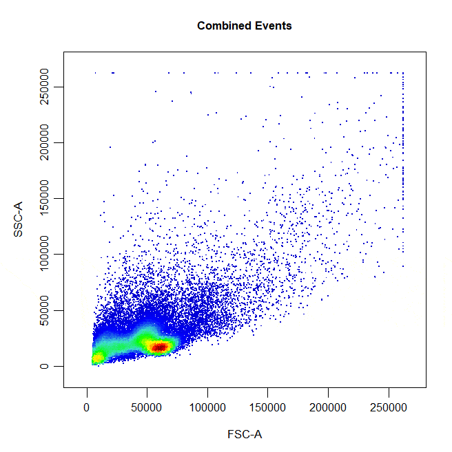
# Ellipse gate
cyto_gate_draw(cs,
alias = "CD8 T Cells",
channels = c("CD4", "CD8"),
type = "ellipse",
axes_trans = trans)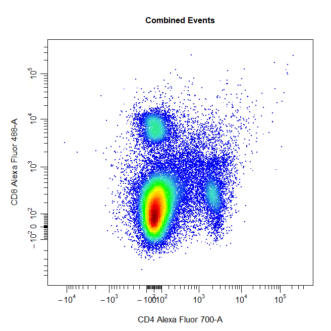
# Interval gate
cyto_gate_draw(cs,
alias = "T Cells",
channels = c("Va2", "CD44"),
type = "interval",
axes_trans = trans)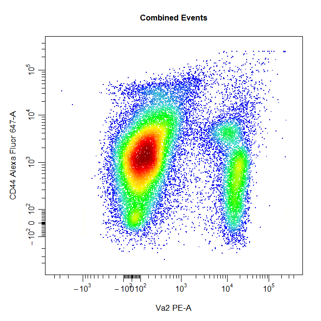
# Interval gate
cyto_gate_draw(cs,
alias = "T Cells",
channels = "Va2",
type = "interval",
axes_trans = trans)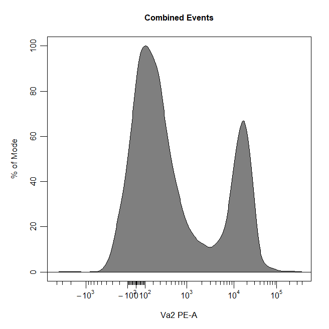
# Threshold gate
cyto_gate_draw(cs,
alias = "Dead Cells",
channels = c("Hoechst-405", "Hoechst-430"),
type = "threshold",
axes_trans = trans)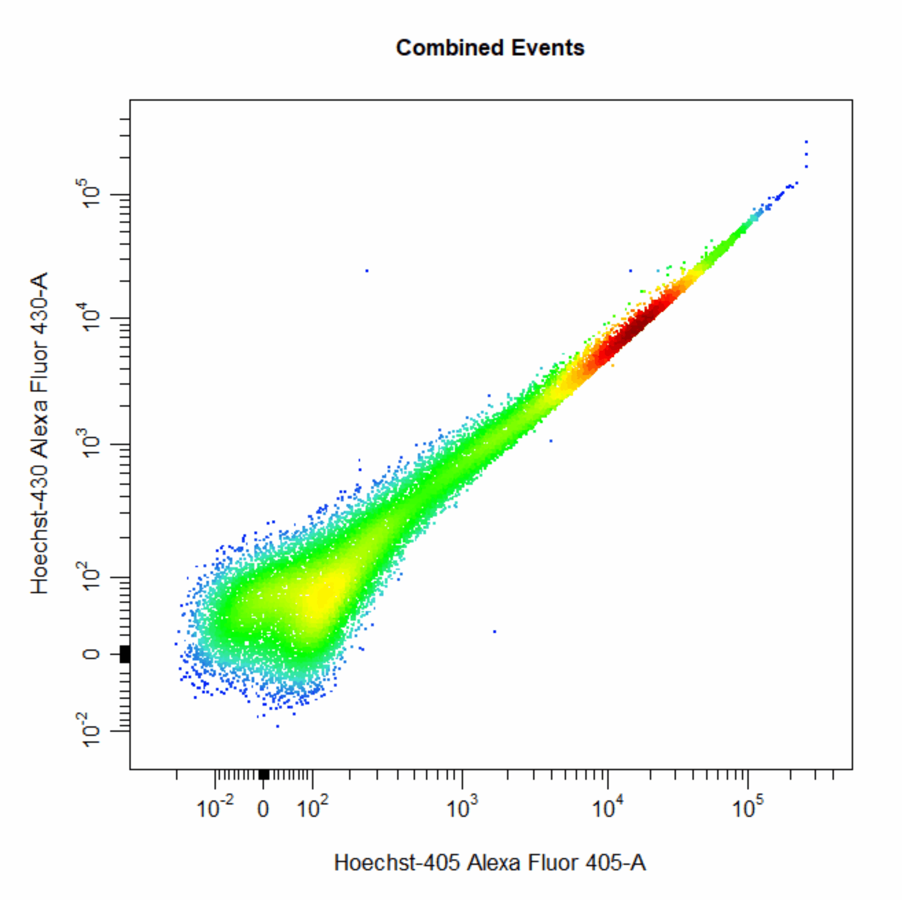
# Threshold gate
cyto_gate_draw(cs,
alias = "T Cells",
channels = "Va2",
type = "threshold",
axes_trans = trans)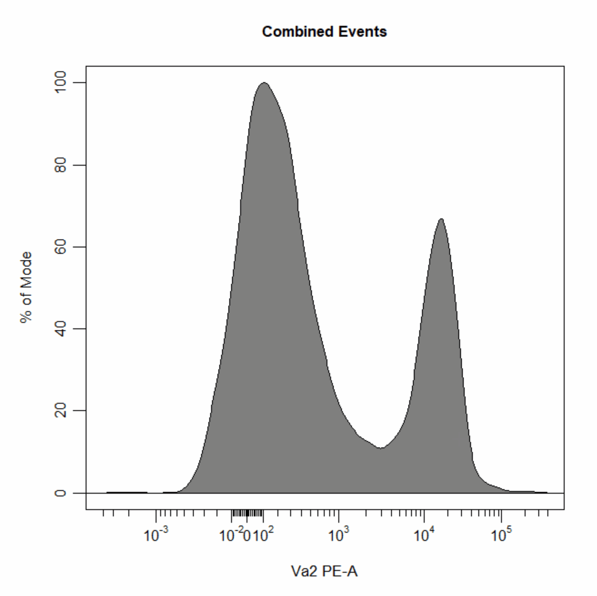
# Quadrant gate
cyto_gate_draw(cs,
alias = c("A","B","C","D"),
channels = c("CD4","CD8"),
type = "quadrant",
axes_trans = trans)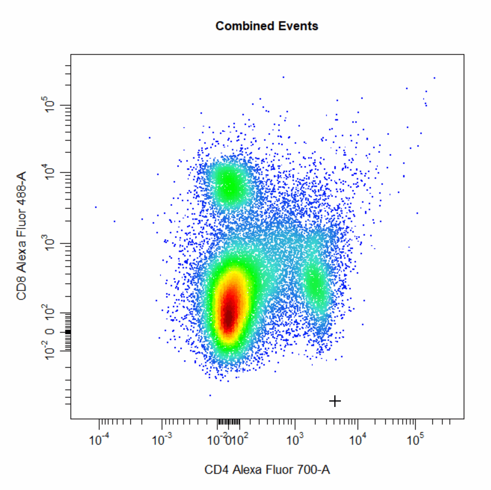
# Web gate
cyto_gate_draw(cs,
alias = c("A","B","C","D"),
channels = c("CD4","CD8"),
type = "web",
axes_trans = trans)
# Multiple gates
cyto_gate_draw(cs,
alias = c("CD4","CD8"),
channels = c("CD4","CD8"),
type = "rectangle",
axes_trans = trans)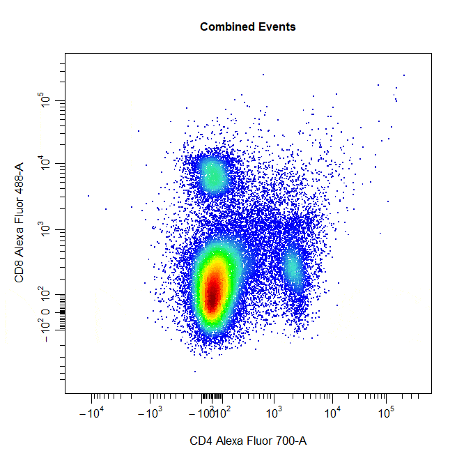
# Multiple gates
cyto_gate_draw(cs,
alias = c("CD4","CD8"),
channels = c("CD4","CD8"),
type = c("rectangle", "ellipse"),
axes_trans = trans)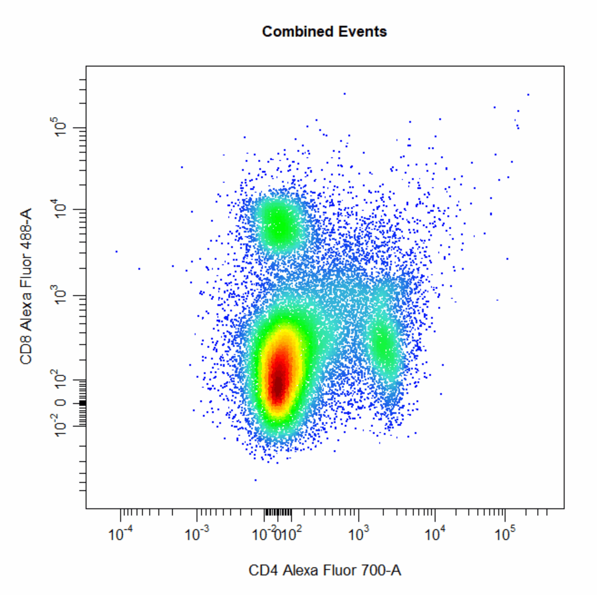
# Negated gates
cyto_gate_draw(cs,
alias = c("Dead Cells","Live Cells"),
channels = c("Hoechst-405","Hoechst-430"),
type = "rectangle",
negate = TRUE,
axes_trans = trans)